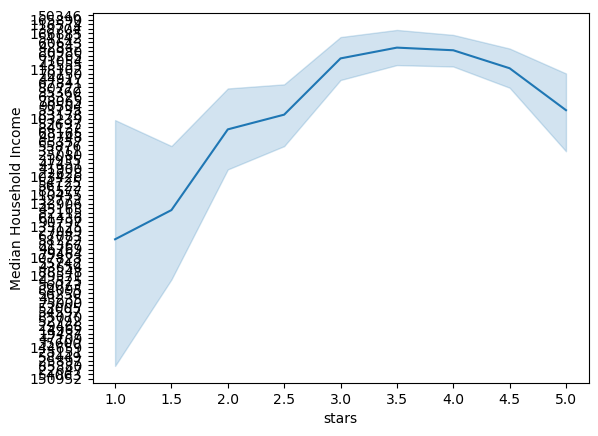
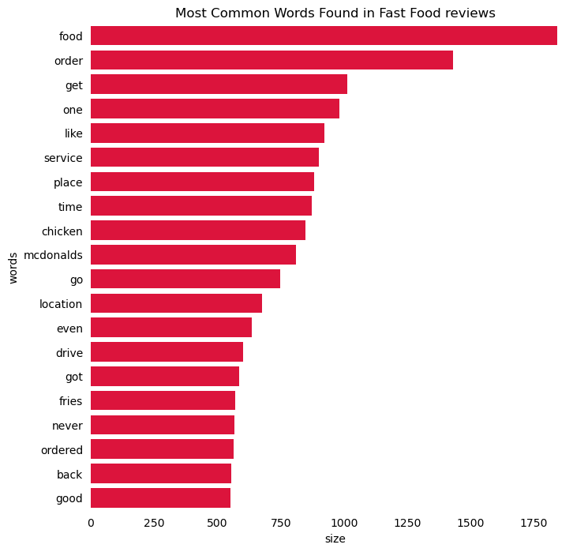
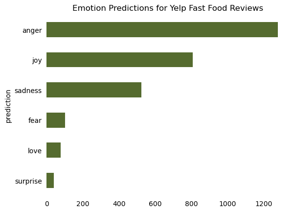
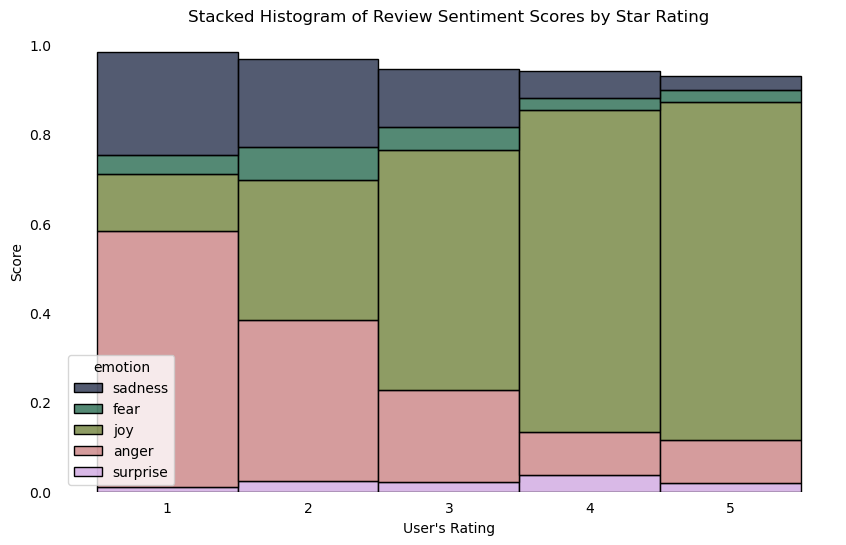

In this assignment, we’ll explore restaurant review data available through the Yelp Dataset Challenge. The dataset includes Yelp data for user reviews and business information for many metropolitan areas. I’ve already downloaded this dataset (8 GB total!) and extracted out the data files for reviews and restaurants in Philadelphia. I’ve placed these data files into the data directory in this repository.
This assignment is broken into two parts:
Part 1: Analyzing correlations between restaurant reviews and census data
We’ll explore the relationship between restaurant reviews and the income levels of the restaurant’s surrounding area.
Part 2: Exploring the impact of fast food restaurants
We’ll run a sentiment analysis on reviews of fast food restaurants and estimate income levels in neighborhoods with fast food restaurants. We’ll test how well our sentiment analysis works by comparing the number of stars to the sentiment of reviews.
1. Correlating restaurant ratings and income levels
In this part, we’ll use the census API to download household income data and explore how it correlates with restaurant review data.
1.1 Query the Census API
Use the cenpy package to download median household income in the past 12 months by census tract from the 2021 ACS 5-year data set for your county of interest.
You have two options to find the correct variable names:
Search through: https://api.census.gov/data/2021/acs/acs5/variables.html Initialize an API connection and use the .varslike() function to search for the proper keywords At the end of this step, you should have a pandas DataFrame holding the income data for all census tracts within the county being analyzed. Feel free to rename your variable from the ACS so it has a more meaningful name!
::: {.callout-caution} Some census tracts won’t have any value because there are not enough households in that tract. The census will use a negative number as a default value for those tracts. You can safely remove those tracts from the analysis! :::
import cenpyimport pandas as pdimport geopandas as gpdimport pygrisimport requests as rqimport numpy as npfrom matplotlib import pyplot as pltimport holoviews as hvimport hvplot.pandasfrom shapely.geometry import Pointpd.options.display.max_colwidth =None
C:\Users\Owner\miniforge3\envs\musa-550-fall-2023\lib\site-packages\libpysal\cg\alpha_shapes.py:39: NumbaDeprecationWarning: The 'nopython' keyword argument was not supplied to the 'numba.jit' decorator. The implicit default value for this argument is currently False, but it will be changed to True in Numba 0.59.0. See https://numba.readthedocs.io/en/stable/reference/deprecation.html#deprecation-of-object-mode-fall-back-behaviour-when-using-jit for details.
def nb_dist(x, y):
C:\Users\Owner\miniforge3\envs\musa-550-fall-2023\lib\site-packages\libpysal\cg\alpha_shapes.py:165: NumbaDeprecationWarning: The 'nopython' keyword argument was not supplied to the 'numba.jit' decorator. The implicit default value for this argument is currently False, but it will be changed to True in Numba 0.59.0. See https://numba.readthedocs.io/en/stable/reference/deprecation.html#deprecation-of-object-mode-fall-back-behaviour-when-using-jit for details.
def get_faces(triangle):
C:\Users\Owner\miniforge3\envs\musa-550-fall-2023\lib\site-packages\libpysal\cg\alpha_shapes.py:199: NumbaDeprecationWarning: The 'nopython' keyword argument was not supplied to the 'numba.jit' decorator. The implicit default value for this argument is currently False, but it will be changed to True in Numba 0.59.0. See https://numba.readthedocs.io/en/stable/reference/deprecation.html#deprecation-of-object-mode-fall-back-behaviour-when-using-jit for details.
def build_faces(faces, triangles_is, num_triangles, num_faces_single):
C:\Users\Owner\miniforge3\envs\musa-550-fall-2023\lib\site-packages\libpysal\cg\alpha_shapes.py:261: NumbaDeprecationWarning: The 'nopython' keyword argument was not supplied to the 'numba.jit' decorator. The implicit default value for this argument is currently False, but it will be changed to True in Numba 0.59.0. See https://numba.readthedocs.io/en/stable/reference/deprecation.html#deprecation-of-object-mode-fall-back-behaviour-when-using-jit for details.
def nb_mask_faces(mask, faces):
available = cenpy.explorer.available()acs = available.filter(regex="^ACS", axis=0)
counties = cenpy.explorer.fips_table("COUNTY")#counties.loc[ counties[3].str.contains("Nassau") & counties[0].str.contains("NY") ]#in case i wanted to find any other counties, only for experimentingcounties.loc[ counties[3].str.contains("Philadelphia") ]
0
1
2
3
4
2294
PA
42
101
Philadelphia County
H6
philly_county_code ="101"pa_state_code ="42"
acs = cenpy.remote.APIConnection("ACSDT5Y2021")variable_id = acs.varslike( pattern='MEDIAN HOUSEHOLD INCOME IN THE PAST 12 MONTHS', by="concept", # searches along concept column).sort_index()#variable_id = B19013_001E
The Yelp dataset includes data for 7,350 restaurants across the city. Load the data from the data/ folder and use the latitude and longitude columns to create a GeoDataFrame after loading the JSON data. Be sure to set the right CRS on when initializing the GeoDataFrame!
Notes
The JSON data is in a “records” format. To load it, you’ll need to pass the following keywords:
1.6 Make a plot of median household income vs. Yelp stars
Our dataset has the number of stars for each restaurant, rounded to the nearest 0.5 star. In this step, create a line plot that shows the average income value for each stars category (e.g., all restaurants with 1 star, 1.5 stars, 2 stars, etc.)
While their are multiple ways to do this, the seaborn.lineplot() is a great option. This can show the average value in each category as well as 95% uncertainty intervals. Use this function to plot the stars (“x”) vs. average income (“y”) for all of our restaurants, using the dataframe from last step. Be sure to format your figure to make it look nice!
Question: Is there a correlation between a restaurant’s ratings and the income levels of its surrounding neighborhood?
sns.lineplot(data=restauranttract, x="stars", y="MedHHInc")plt.ylabel("Median Household Income")plt.ybins=5# There no real correlation between income levels and ratings, any restaurant can be

2. Fast food trends in Philadelphia
At the end of part 1, you should have seen a strong trend where higher income tracts generally had restaurants with better reviews. In this section, we’ll explore the impact of fast food restaurants and how they might be impacting this trend.
Hypothesis
Fast food restaurants are predominantly located in areas with lower median income levels.
Fast food restaurants have worse reviews compared to typical restaurants.
If true, these two hypotheses could help to explain the trend we found in part 1. Let’s dive in and test our hypotheses!
2.1 Identify fast food restaurants
The “categories” column in our dataset contains multiple classifications for each restaurant. One such category is “Fast Food”. In this step, add a new column called “is_fast_food” that is True if the “categories” column contains the term “Fast Food” and False otherwise
2.2 Calculate the median income for fast food and otherwise
Group by the “is_fast_food” column and calculate the median income for restaurants that are and are not fast food. You should find that income levels are lower in tracts with fast food.
Note: this is just an estimate, since we are calculating a median of median income values.
Restaurants, Specialty Food, Food, Sandwiches, Italian
POINT (-75.21443 40.03248)
204.0
42
...
S
538872.0
0.0
+40.0322339
-075.2181174
79464.0
42
101
021300
0
7348
8n93L-ilMAsvwUatarykSg
39.951018
-75.198240
Kitchen Gia
22
3.0
Coffee & Tea, Food, Sandwiches, American (Traditional), Restaurants
POINT (-75.19824 39.95102)
315.0
42
...
S
883507.0
49251.0
+39.9523358
-075.1889603
27821.0
42
101
036902
0
7349
WnT9NIzQgLlILjPT0kEcsQ
39.935982
-75.158665
Adelita Taqueria & Restaurant
35
4.5
Restaurants, Mexican
POINT (-75.15867 39.93598)
33.0
42
...
S
535423.0
0.0
+39.9367634
-075.1595100
91382.0
42
101
002400
0
7350 rows × 26 columns
2.3 Load fast food review data
In the rest of part 2, we’re going to run a sentiment analysis on the reviews for fast food restaurants. The review data for all fast food restaurants identified in part 2.1 is already stored in the data/ folder. The data is stored as a JSON file and you can use pandas.read_json to load it.
Notes
The JSON data is in a “records” format. To load it, you’ll need to pass the following keywords:
orient='records'
lines=True
reviews = pd.read_json('Data/reviews_philly_fast_food.json', orient='records', lines=True)restreviews = reviews.merge(resturantsGpd, on ="business_id", how ="inner")restreviews = restreviews.rename(columns={"stars_x": "stars_given", "stars_y": "overall_rating"})restreviews.head(1)
business_id
review_id
stars_given
text
latitude
longitude
name
review_count
overall_rating
categories
geometry
0
kgMEBZG6rjkGeFzPaIM4MQ
E-yGr1OhsUBxNeUVLDVouA
1
I know I shouldn't expect much but everything I asked for that was on the drive thru menu was not available. I was actually afraid of what I was going to get once I did get it. I saw the movie "waiting". Word of advice stay clear of this arch. Just so you know I was only trying to order a beverage how pathetic is that.
39.93944
-75.166805
McDonald's
55
2.0
Fast Food, Food, Restaurants, Coffee & Tea, Burgers
POINT (-75.16680 39.93944)
2.4 Trim to the most popular fast food restaurants
There’s too many reviews to run a sentiment analysis on all of them in a reasonable time. Let’s trim our reviews dataset to the most popular fast food restaurants, using the list provided below.
You will need to get the “business_id” values for each of these restaurants from the restaurants data loaded in part 1.3. Then, trim the reviews data to include reviews only for those business IDs.
I know I shouldn't expect much but everything I asked for that was on the drive thru menu was not available. I was actually afraid of what I was going to get once I did get it. I saw the movie "waiting". Word of advice stay clear of this arch. Just so you know I was only trying to order a beverage how pathetic is that.
39.93944
-75.166805
McDonald's
55
2.0
Fast Food, Food, Restaurants, Coffee & Tea, Burgers
POINT (-75.16680 39.93944)
2.5 Run the emotions classifier on fast food reviews
Run a sentiment analysis on the reviews data from the previous step. Use the DistilBERT model that can predict emotion labels (anger, fear, sadness, joy, love, and surprise). Transform the result from the classifier into a DataFrame so that you have a column for each of the emotion labels.
['I know I shouldn\'t expect much but everything I asked for that was on the drive thru menu was not available. I was actually afraid of what I was going to get once I did get it. I saw the movie "waiting". Word of advice stay clear of this arch. Just so you know I was only trying to order a beverage how pathetic is that.',
'Dirty bathrooms and very slow service, but I was pleased because they had a TV on with subtitles and the volume on, and it was turned to the news! A good place to pass some time with a tasty Mc-snack and a hot coffee while in Philly during a chilly day! We stopped here on the way to a football game and found it a very pleasant and relaxing place to hang out for a while.',
"That's a shame! \nThis place is full of junkies customers \nThe staff and the service is fast \nIt's just too much like homeless or you can tell the addict people all coming here and soliciting"]
example_string ="This is an Example"descriptions_words = [desc.split() for desc in descriptions]descriptions_words_flat = []for list_of_words in descriptions_words:for word in list_of_words: descriptions_words_flat.append(word)descriptions_words_lower = [word.lower() for word in descriptions_words_flat]import nltknltk.download("stopwords");stop_words =list(set(nltk.corpus.stopwords.words("english")))descriptions_no_stop = []for word in descriptions_words_lower:if word notin stop_words: descriptions_no_stop.append(word)descriptions_no_stop = [ word for word in descriptions_words_lower if word notin stop_words]import stringpunctuation =list(string.punctuation)descriptions_final = []# Loop over all wordsfor word in descriptions_no_stop:# Remove any punctuation from the wordsfor p in punctuation: word = word.replace(p, "")# Save it if the string is not emptyif word !="": descriptions_final.append(word)
[nltk_data] Downloading package stopwords to
[nltk_data] C:\Users\Owner\AppData\Roaming\nltk_data...
[nltk_data] Package stopwords is already up-to-date!
words = pd.DataFrame({"words": descriptions_final})
N = ( words.groupby("words", as_index=False) .size() .sort_values("size", ascending=False, ignore_index=True))
top20 = N.head(20)top20
words
size
0
food
1840
1
order
1430
2
get
1012
3
one
980
4
like
922
5
service
901
6
place
882
7
time
873
8
chicken
848
9
mcdonalds
810
10
go
748
11
location
677
12
even
637
13
drive
601
14
got
585
15
fries
570
16
never
568
17
ordered
563
18
back
554
19
good
550
fig, ax = plt.subplots(figsize=(8, 8))# Plot horizontal bar graphsns.barplot( y="words", x="size", data=top20, ax=ax, color="crimson", saturation=1.0,)ax.set_title("Most Common Words Found in Fast Food reviews")# Remove spines (the box)for spine in ax.spines.values(): spine.set_visible(False)# Remove x and y ticksax.tick_params(bottom=False, left=False)

2.6 Identify the predicted emotion for each text
Use the pandas idxmax() to identify the predicted emotion for each review, and add this value to a new column called “prediction”
The predicted emotion has the highest confidence score across all emotion labels for a particular label.
C:\Users\Owner\miniforge3\envs\musa-550-fall-2023\lib\site-packages\huggingface_hub\file_download.py:138: UserWarning: `huggingface_hub` cache-system uses symlinks by default to efficiently store duplicated files but your machine does not support them in C:\Users\Owner\.cache\huggingface\hub. Caching files will still work but in a degraded version that might require more space on your disk. This warning can be disabled by setting the `HF_HUB_DISABLE_SYMLINKS_WARNING` environment variable. For more details, see https://huggingface.co/docs/huggingface_hub/how-to-cache#limitations.
To support symlinks on Windows, you either need to activate Developer Mode or to run Python as an administrator. In order to see activate developer mode, see this article: https://docs.microsoft.com/en-us/windows/apps/get-started/enable-your-device-for-development
warnings.warn(message)
Xformers is not installed correctly. If you want to use memory_efficient_attention to accelerate training use the following command to install Xformers
pip install xformers.
emotion = pd.DataFrame( [{d["label"]: d["score"] for d in dd} for dd in emotion_scores]).assign(text=descriptions)emotion.head(3)
sadness
fear
anger
joy
surprise
love
text
0
0.733869
0.250677
0.011039
0.002758
0.001015
0.000643
I know I shouldn't expect much but everything I asked for that was on the drive thru menu was not available. I was actually afraid of what I was going to get once I did get it. I saw the movie "waiting". Word of advice stay clear of this arch. Just so you know I was only trying to order a beverage how pathetic is that.
1
0.000216
0.000088
0.000153
0.998563
0.000161
0.000819
Dirty bathrooms and very slow service, but I was pleased because they had a TV on with subtitles and the volume on, and it was turned to the news! A good place to pass some time with a tasty Mc-snack and a hot coffee while in Philly during a chilly day! We stopped here on the way to a football game and found it a very pleasant and relaxing place to hang out for a while.
2
0.268274
0.039276
0.658548
0.030782
0.001894
0.001226
That's a shame! \nThis place is full of junkies customers \nThe staff and the service is fast \nIt's just too much like homeless or you can tell the addict people all coming here and soliciting
emotion_count = emotion.groupby("prediction").size().sort_values()# Plottingax = emotion_count.plot(kind='barh', color='darkolivegreen')# Add titleax.set_title('Emotion Predictions for Yelp Fast Food Reviews')# Remove spines (the box)for spine in ax.spines.values(): spine.set_visible(False)# Remove x and y ticksax.tick_params(bottom=False, left=False)

2.7 Combine the ratings and sentiment data
Combine the data from part 2.4 (reviews data) and part 2.6 (emotion data). Use the pd.concat() function and combine along the column axis.
Note: You’ll need to reset the index of your reviews data frame so it matches the emotion data index (it should run from 0 to the length of the data - 1).
review_sentiment = emotion.merge(restfocus, on ="text", how ="left")
2.8 Plot sentiment vs. stars
We now have a dataframe with the predicted primary emotion for each review and the associated number of stars for each review. Let’s explore two questions:
Does sentiment analysis work? Do reviews with fewer stars have negative emotions?
For our fast food restaurants, are reviews generally positive or negative?
Use seaborn’s histplot() to make a stacked bar chart showing the breakdown of each emotion for each stars category (1 star, 2 stars, etc.). A few notes:
To stack multiple emotion labels in one bar, use the multiple="stack" keyword
The discrete=True can be helpful to tell seaborn our stars values are discrete categories
palette = sns.color_palette("cubehelix")plt.figure(figsize=(10, 6))sns.histplot(data=review_sentiment_long, x="stars_given", weights="score", hue="emotion", multiple="stack", discrete=True, palette=palette)plt.title('Stacked Histogram of Review Sentiment Scores by Star Rating')plt.xlabel("User's Rating")plt.ylabel('Score')ax = plt.gca()ax.spines['top'].set_visible(False)ax.spines['right'].set_visible(False)ax.spines['bottom'].set_visible(False)ax.spines['left'].set_visible(False)ax.tick_params(bottom=False, left=False)plt.show()
C:\Users\Owner\AppData\Local\Temp\ipykernel_17508\205832856.py:5: UserWarning: The palette list has more values (6) than needed (5), which may not be intended.
sns.histplot(data=review_sentiment_long, x="stars_given", weights="score", hue="emotion", multiple="stack", discrete=True, palette=palette)

Question: What does your chart indicate for the effectiveness of our sentiment analysis? Does our original hypothesis about fast food restaurants seem plausible?
The chart indicates there are certain emotions more prominent in certain ratings. Places recieving a 4 or 5 have mostly joyful reviews, with scatters of other emotions that may have been misinterpreted by the model. Lower rated places see anger or sadness which makes sense given the user’s attitude towards the restaurant.